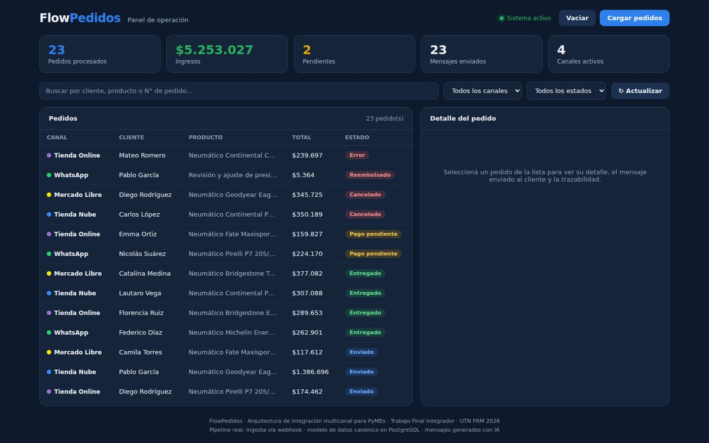
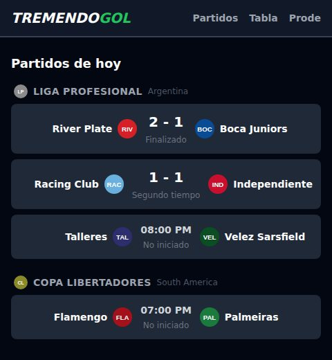
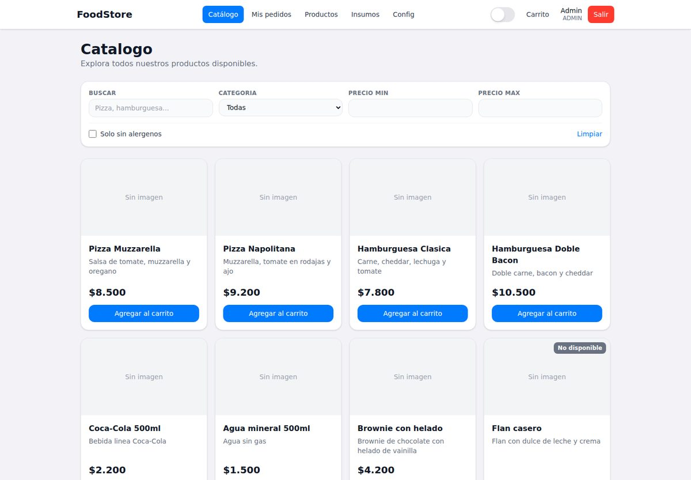

Cuatro proyectos, cuatro contextos distintos
Una tesis con arquitectura de integración e IA, una app en producción para un cliente real, un trabajo grupal de la cursada y un proyecto personal. Cada tarjeta lleva a su caso de estudio completo.

Neu+
Sistema de seguimiento post-venta para un taller automotriz, en uso real por un cliente. Gestión de clientes y vehículos, consulta pública por patente, notificaciones por WhatsApp.
Ver caso de estudio →
flowpedidos
Arquitectura de integración multicanal para PyMEs de e-commerce: centraliza pedidos de Mercado Libre, WhatsApp, WooCommerce y Tienda Nube en un modelo de datos canónico único, con mensajes generados por IA.
Ver caso de estudio →
TremendoGol
App mobile-first de fixtures, resultados y tablas de posiciones de fútbol, agrupados por liga y con traducción de estados de partido en vivo.
Ver caso de estudio →
Food Store
E-commerce de productos alimenticios hecho en equipo: catálogo, carrito y pedidos con máquina de estados, panel admin y auth con JWT y roles.
Ver caso de estudio →